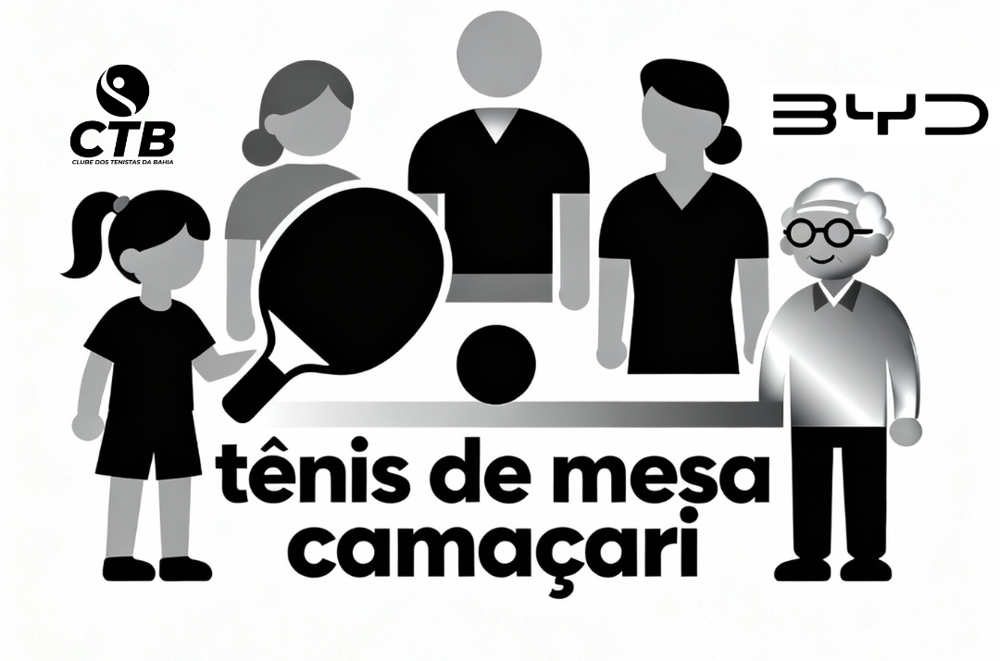

Centro Esportivo de Camaçari - Tênis de Mesa

Fundado em Salvador, o Clube dos Tenistas da Bahia (CTB) nasceu da paixão pelo esporte e da crença em seu poder de transformação social. Desde o início, sua missão foi clara: democratizar o acesso ao tênis e ao tênis de mesa, utilizando essas modalidades como ferramentas para a educação, inclusão e desenvolvimento de crianças e jovens em todo o estado.
"Ser uma entidade de referência nacional na gestão de projetos esportivos inclusivos, reconhecida pela excelência, transparência e pelo impacto social positivo gerado na vida dos participantes e em suas comunidades, transformando a Bahia em um celeiro de talentos e cidadãos."
Ao longo de sua trajetória, o CTB já impactou a vida de centenas de jovens, consolidando projetos de sucesso e construindo uma forte rede de parceiros. O foco para o futuro é expandir ainda mais o alcance de suas ações, implementando novas tecnologias e metodologias para continuar a transformar vidas através da força do esporte.


Símbolo de integração, desenvolvimento e saúde para todos em Camaçari